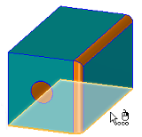
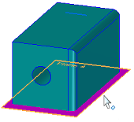
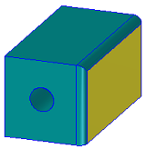
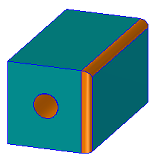
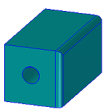

Part Painter command bar
- Face Styles List
-
Sets the face style you want to apply to the selected elements.
Face styles are defined in the Style dialog box by a combination of properties, such as face color, edge color, texture, shininess, image pattern maps, and default render mode.
- Select Element Type
-
Sets the category to be used for element selection.
Tip:PathFinder shows what types of objects in the model match the categories in the Select Element Type list, and also aids in selecting these objects. For example, when the selection type is Feature, only objects listed under the Features node in PathFinder are selectable in the graphics window for painting. When the selection method is set to Any, you can move your cursor over any of the objects listed in PathFinder until the object you want to select is also highlighted in the graphics window.
Use this option
To
Any
Select anything in the model for painting. Used with QuickPick or PathFinder, you can isolate and select simple geometry, such as construction elements and sketch elements, as well as coordinate systems and reference planes.


Face
Selects individual faces or surfaces.

Example:A face retains its current color when Feature or Body is the selection type and you are keeping (not replacing) styles.
Feature
Selects objects listed under the Features node in PathFinder, such as holes, rounds, and patterns, as well as 3D primitives such as boxes and cylinders (protrusions) and spheres.

Example:A feature retains its current color when Body is the selection type and you are keeping (not replacing) styles.
By Feature Type
In the ordered environment, selects objects with styles of the same type.
Body
Selects objects listed under the Design Bodies node in PathFinder, including multi-body objects in a part file.

Example:A body always changes color with any selection type, unless there is a Parasolid body attribute applied to it. To change the color of a Parasolid body, use the Replace Styles option.
- Currently Applied Styles
-
Specifies whether you are removing color from selected objects or applying new colors over the base style color.
- Keep Styles
-
Maintains previously applied color on a feature or face while allowing you to change the color of the body.
- Replace Styles
-
Replaces previously applied color with the color currently shown in the Style list.
Use the Replace Styles option to clear color attributes from imported Parasolid bodies and surfaces.
Tip:Selecting the None option from the Face Styles List, along with the Replace Styles option from the Currently Applied Styles list removes the currently applied color and face style from the elements you select. The model default color is applied to solid models, and the construction default color is applied to surface models.
- Close
-
Exits the command and closes the command bar.
How do I
Set the Color Scheme for Solid EdgeSet the part color display
Apply an override to the base part style with Part Painter
Display Element Colors Based on Degrees of Freedom
Display draft face colors on a part
Learn more
Using colors in Solid EdgeUsing Color Manager and Part Painter
Using 3D model colors in drawing views
Look up more details
Color Manager commandColor Manager dialog box
Part Painter command
Relationship Colors command
Color dialog box